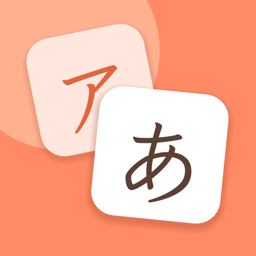

もじっこ サポート
「もじっこ」は、5〜6歳のお子さまが、ひらがな・カタカナを「聞いて分かる」「見分けられる」「書ける」ようになるための学習アプリです。特に、シとツ、ソとンのような、似ている字の見分けに力を入れています。
よくある質問
購入したのに、すべての文字で遊べません。
タイトル画面の右上の歯車 → おうちの方の確認 → 「すべての文字で遊ぶ（購入・復元）」 → 「購入を復元」を押してください。購入したときと同じ Apple アカウントでサインインしている必要があります。
家族の端末でも使えますか？
ファミリー共有に対応しています。ファミリー共有で購入を共有している家族の端末では、追加料金なしですべての文字で遊べます。
遊んだ記録を消したいです。
タイトル画面の右上の歯車 → おうちの方の確認 → 「遊んだ記録をすべて消す」を押してください。
今後、濁音や小さい字は追加されますか？
追加を予定しています。購入済みの方は、追加分も追加料金なしで遊べます。
お問い合わせ
不具合のご報告やご要望は、次のメールアドレスまでお願いします。お使いの端末（例：iPhone 16）と iOS のバージョンを添えていただけると助かります。
ryohei.dev.support@gmail.com
Mojikko Support
Mojikko is a learning app that helps children aged 5 to 6 learn to recognize, distinguish, and write hiragana and katakana, with a special focus on telling look-alike characters apart (such as シ and ツ, or ソ and ン).
FAQ
I made a purchase, but not all characters are unlocked.
Tap the gear icon at the top right of the title screen, answer the parental check, open "すべての文字で遊ぶ（購入・復元）" (Play with all characters), and tap "購入を復元" (Restore purchases). Make sure you are signed in with the same Apple Account you used for the purchase.
Can my family use it on their devices?
Yes. The purchase supports Family Sharing.
How do I delete play records?
Tap the gear icon, answer the parental check, and tap "遊んだ記録をすべて消す" (Delete all play records).
Contact
For bug reports and requests, please email us. Including your device model and iOS version helps.
ryohei.dev.support@gmail.com